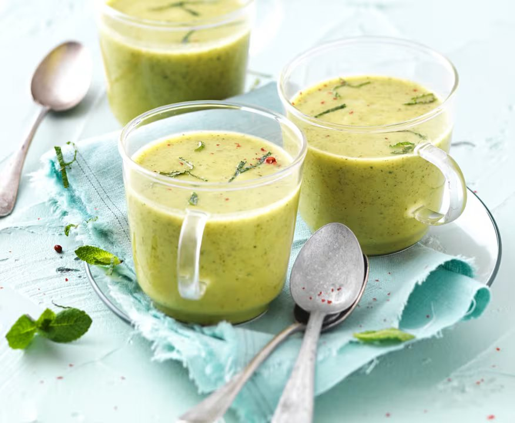

Velouté de courgette
Ingrédients
4×
- 50 g d'oignon
- 1 gousse d'ail
- 700 g de courgettes
- 500 g d'eau
- 1 cube de bouillon de légumes
- 0.5 c. à c. de sel
- 1 pincée de poivre
- 10 g de beurre
- 40 -50g de Vache qui rit

Préparation
Étape 1
Hacher 50 g d'oignon et 1 gousse d'ail 3 sec/vitesse 5.
Étape 2
Ajouter 700 g de courgettes, 500 g d'eau, 1 cube de bouillon de légumes, 0.5 c. à c. de sel et 1 pincée de poivre. Cuire 15 min/100ºC/vitesse 1.
Étape 3
Ajouter 10 g de beurre et 40 -50g de Vache qui rit, mixer 1 min/vitesse 4-8 en augmentant progressivement.
Conseils
- Remplacer le cube par 1 cas bombée de fond de légumes.
- Ajouter quelques feuilles de menthe.
Résumé
50 g d'oignon
1 gousse d'ail
Hacher 3 sec/vitesse 5
700 g de courgettes
500 g d'eau
1 cube de bouillon de légumes
0.5 c. à c. de sel
1 pincée de poivre
Cuire 15 min/100ºC/vitesse 1
10 g de beurre
40 -50g de Vache qui rit
mixer 1 min/vitesse 4-8